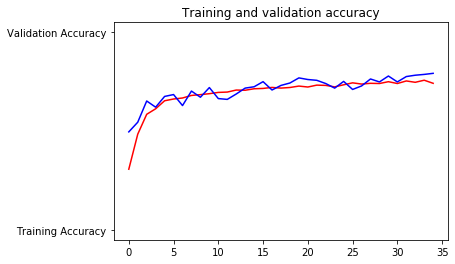
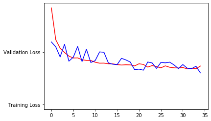

Python 3.7.3 (default, Apr 24 2019, 15:29:51) [MSC v.1915 64 bit (AMD64)]
Type "copyright", "credits" or "license" for more information.
IPython 7.6.1 -- An enhanced Interactive Python.
Restarting kernel...
In [1]: runfile('C:/Users/Habibullah/Desktop/Leaves Recognition/flower_recognition.py', wdir='C:/Users/Habibullah/Desktop/Leaves Recognition')
Found 2934 images belonging to 5 classes.
Found 736 images belonging to 5 classes.
WARNING:tensorflow:From C:\Users\Habibullah\Anaconda3\lib\site-packages\tensorflow\python\ops\init_ops.py:1251: calling VarianceScaling.__init__ (from tensorflow.python.ops.init_ops) with dtype is deprecated and will be removed in a future version.
Instructions for updating:
Call initializer instance with the dtype argument instead of passing it to the constructor
Model: "sequential"
_________________________________________________________________
Layer (type) Output Shape Param #
=================================================================
conv2d (Conv2D) (None, 298, 298, 64) 1792
_________________________________________________________________
max_pooling2d (MaxPooling2D) (None, 149, 149, 64) 0
_________________________________________________________________
conv2d_1 (Conv2D) (None, 147, 147, 64) 36928
_________________________________________________________________
max_pooling2d_1 (MaxPooling2 (None, 73, 73, 64) 0
_________________________________________________________________
conv2d_2 (Conv2D) (None, 71, 71, 128) 73856
_________________________________________________________________
max_pooling2d_2 (MaxPooling2 (None, 35, 35, 128) 0
_________________________________________________________________
conv2d_3 (Conv2D) (None, 33, 33, 128) 147584
_________________________________________________________________
max_pooling2d_3 (MaxPooling2 (None, 16, 16, 128) 0
_________________________________________________________________
flatten (Flatten) (None, 32768) 0
_________________________________________________________________
dropout (Dropout) (None, 32768) 0
_________________________________________________________________
dense (Dense) (None, 1024) 33555456
_________________________________________________________________
dense_1 (Dense) (None, 5) 5125
=================================================================
Total params: 33,820,741
Trainable params: 33,820,741
Non-trainable params: 0
_________________________________________________________________
Epoch 1/35
92/92 [==============================] - 568s 6s/step - loss: 1.8412 - acc: 0.3071 - val_loss: 1.1920 - val_acc: 0.4959
Epoch 2/35
92/92 [==============================] - 519s 6s/step - loss: 1.2363 - acc: 0.4843 - val_loss: 1.0993 - val_acc: 0.5448
Epoch 3/35
92/92 [==============================] - 521s 6s/step - loss: 1.0726 - acc: 0.5849 - val_loss: 0.9062 - val_acc: 0.6522
Epoch 4/35
92/92 [==============================] - 502s 5s/step - loss: 0.9908 - acc: 0.6128 - val_loss: 1.1480 - val_acc: 0.6209
Epoch 5/35
92/92 [==============================] - 525s 6s/step - loss: 0.9219 - acc: 0.6534 - val_loss: 0.8248 - val_acc: 0.6753
Epoch 6/35
92/92 [==============================] - 497s 5s/step - loss: 0.8852 - acc: 0.6622 - val_loss: 0.9004 - val_acc: 0.6848
Epoch 7/35
92/92 [==============================] - 480s 5s/step - loss: 0.8871 - acc: 0.6673 - val_loss: 1.1062 - val_acc: 0.6291
Epoch 8/35
92/92 [==============================] - 514s 6s/step - loss: 0.8519 - acc: 0.6803 - val_loss: 0.8177 - val_acc: 0.7024
Epoch 9/35
92/92 [==============================] - 514s 6s/step - loss: 0.8401 - acc: 0.6844 - val_loss: 1.0526 - val_acc: 0.6712
Epoch 10/35
92/92 [==============================] - 517s 6s/step - loss: 0.8383 - acc: 0.6892 - val_loss: 0.7996 - val_acc: 0.7201
Epoch 11/35
92/92 [==============================] - 482s 5s/step - loss: 0.8045 - acc: 0.6956 - val_loss: 0.8363 - val_acc: 0.6644
Epoch 12/35
92/92 [==============================] - 478s 5s/step - loss: 0.7870 - acc: 0.6973 - val_loss: 1.0019 - val_acc: 0.6603
Epoch 13/35
92/92 [==============================] - 474s 5s/step - loss: 0.7868 - acc: 0.7076 - val_loss: 0.9951 - val_acc: 0.6875
Epoch 14/35
92/92 [==============================] - 595s 6s/step - loss: 0.7762 - acc: 0.7065 - val_loss: 0.7930 - val_acc: 0.7174
Epoch 15/35
92/92 [==============================] - 753s 8s/step - loss: 0.7742 - acc: 0.7140 - val_loss: 0.7668 - val_acc: 0.7242
Epoch 16/35
92/92 [==============================] - 780s 8s/step - loss: 0.7596 - acc: 0.7157 - val_loss: 0.7586 - val_acc: 0.7500
Epoch 17/35
92/92 [==============================] - 756s 8s/step - loss: 0.7507 - acc: 0.7209 - val_loss: 0.8794 - val_acc: 0.7079
Epoch 18/35
92/92 [==============================] - 774s 8s/step - loss: 0.7558 - acc: 0.7175 - val_loss: 0.8490 - val_acc: 0.7310
Epoch 19/35
92/92 [==============================] - 779s 8s/step - loss: 0.7541 - acc: 0.7205 - val_loss: 0.8084 - val_acc: 0.7432
Epoch 20/35
92/92 [==============================] - 788s 9s/step - loss: 0.7339 - acc: 0.7277 - val_loss: 0.6617 - val_acc: 0.7690
Epoch 21/35
92/92 [==============================] - 759s 8s/step - loss: 0.7748 - acc: 0.7229 - val_loss: 0.6730 - val_acc: 0.7609
Epoch 22/35
92/92 [==============================] - 744s 8s/step - loss: 0.7628 - acc: 0.7324 - val_loss: 0.6530 - val_acc: 0.7568
Epoch 23/35
92/92 [==============================] - 740s 8s/step - loss: 0.7129 - acc: 0.7311 - val_loss: 0.8090 - val_acc: 0.7405
Epoch 24/35
92/92 [==============================] - 632s 7s/step - loss: 0.7405 - acc: 0.7236 - val_loss: 0.7913 - val_acc: 0.7174
Epoch 25/35
92/92 [==============================] - 501s 5s/step - loss: 0.7206 - acc: 0.7342 - val_loss: 0.6867 - val_acc: 0.7514
Epoch 26/35
92/92 [==============================] - 530s 6s/step - loss: 0.6989 - acc: 0.7440 - val_loss: 0.8021 - val_acc: 0.7106
Epoch 27/35
92/92 [==============================] - 490s 5s/step - loss: 0.7373 - acc: 0.7379 - val_loss: 0.7938 - val_acc: 0.7283
Epoch 28/35
92/92 [==============================] - 485s 5s/step - loss: 0.7078 - acc: 0.7416 - val_loss: 0.8063 - val_acc: 0.7636
Epoch 29/35
92/92 [==============================] - 494s 5s/step - loss: 0.6982 - acc: 0.7406 - val_loss: 0.7527 - val_acc: 0.7486
Epoch 30/35
92/92 [==============================] - 508s 6s/step - loss: 0.6943 - acc: 0.7498 - val_loss: 0.6824 - val_acc: 0.7785
Epoch 31/35
92/92 [==============================] - 508s 6s/step - loss: 0.7052 - acc: 0.7406 - val_loss: 0.7606 - val_acc: 0.7486
Epoch 32/35
92/92 [==============================] - 501s 5s/step - loss: 0.6764 - acc: 0.7536 - val_loss: 0.6907 - val_acc: 0.7758
Epoch 33/35
92/92 [==============================] - 495s 5s/step - loss: 0.6927 - acc: 0.7468 - val_loss: 0.6818 - val_acc: 0.7826
Epoch 34/35
92/92 [==============================] - 505s 5s/step - loss: 0.6815 - acc: 0.7573 - val_loss: 0.7282 - val_acc: 0.7867
Epoch 35/35
92/92 [==============================] - 502s 5s/step - loss: 0.7307 - acc: 0.7416 - val_loss: 0.6022 - val_acc: 0.7921
WARNING:tensorflow:From C:/Users/Habibullah/Desktop/Leaves Recognition/flower_recognition.py:149: The name tf.lite.TocoConverter is deprecated. Please use tf.compat.v1.lite.TocoConverter instead.
WARNING:tensorflow:From C:/Users/Habibullah/Desktop/Leaves Recognition/flower_recognition.py:149: TocoConverter.from_keras_model_file (from tensorflow.lite.python.lite) is deprecated and will be removed in a future version.
Instructions for updating:
Use `lite.TFLiteConverter.from_keras_model_file` instead.
WARNING:tensorflow:From C:\Users\Habibullah\Anaconda3\lib\site-packages\tensorflow\python\ops\init_ops.py:97: calling GlorotUniform.__init__ (from tensorflow.python.ops.init_ops) with dtype is deprecated and will be removed in a future version.
Instructions for updating:
Call initializer instance with the dtype argument instead of passing it to the constructor
WARNING:tensorflow:From C:\Users\Habibullah\Anaconda3\lib\site-packages\tensorflow\python\ops\init_ops.py:97: calling Zeros.__init__ (from tensorflow.python.ops.init_ops) with dtype is deprecated and will be removed in a future version.
Instructions for updating:
Call initializer instance with the dtype argument instead of passing it to the constructor
WARNING:tensorflow:From C:\Users\Habibullah\Anaconda3\lib\site-packages\tensorflow\lite\python\util.py:238: convert_variables_to_constants (from tensorflow.python.framework.graph_util_impl) is deprecated and will be removed in a future version.
Instructions for updating:
Use `tf.compat.v1.graph_util.convert_variables_to_constants`
WARNING:tensorflow:From C:\Users\Habibullah\Anaconda3\lib\site-packages\tensorflow\python\framework\graph_util_impl.py:270: extract_sub_graph (from tensorflow.python.framework.graph_util_impl) is deprecated and will be removed in a future version.
Instructions for updating:
Use `tf.compat.v1.graph_util.extract_sub_graph`
INFO:tensorflow:Froze 12 variables.
INFO:tensorflow:Converted 12 variables to const ops.


<Figure size 432x288 with 0 Axes>
In [2]: